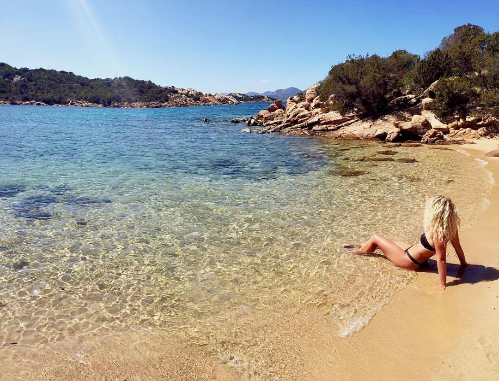

Mi chiamo Eleonora Proserpio, ho 21 anni e vivo a Cesate, un piccolo paesino in provincia di milano.
Sto frequentando il primo anno di studi in Design degli interni al Politecnico di Milano.
Mi definisco una ragazza solare, simpatica e molto curiosa. Sono molto estroversa e questo non sempre si rivela essere un pregio.
Sono molto generosa e allo stesso tempo gelosa delle mie cose che conservo con molta cura.
Sono una ragazza molto impulsiva, seguo sempre il mio istinto senza riflettere troppo e questo spesso mi porta a trovarmi in situazioni scomode.
Mi affascina tutto ciò che è insolito e complicato. Ho bisogno di essere stimolata continuamente in qualsiasi ambito per non correre il rischio di stancarmi velocemente di qualcosa o di qualcuno.
Per quanto riguarda i miei interessi, le mie due più grandi passioni sono la musica e i viaggi.
Oltre alla musica e ai viaggi, ovviamente, tra le mie passioni c'è anche quello per cui sto studiando, ovvero il desgin e in particolare quello degli interni. Il mio obiettivo è quello di realizzarmi lavorativamente in quello che mi piace fare ed avere il tempo da dedicare alla mia famiglia e alle mie passioni. Questo è ciò che mi auguro per il mio futuro.
